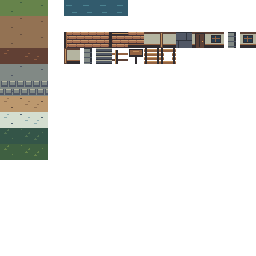
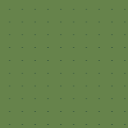
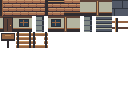
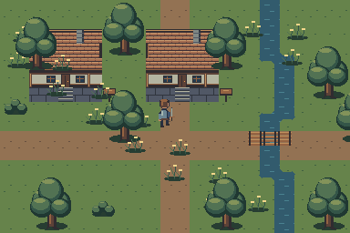
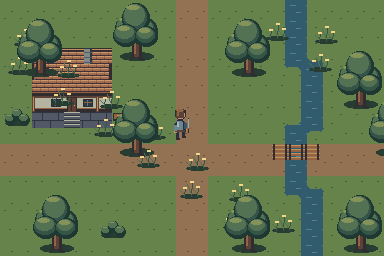

Search the Art Bible
Search works locally, including offline.
Art Bible · Tilesets
Terrain families and atlas construction
Reusable 16×16 cells, complete terrain families and exact scene recipes.
Edition 0.1.0 · Owner review pending for new reference art
On this page
Start with the atlas
The example atlas is 256×256 pixels: 16 columns by 16 rows of 16×16 cells, zero margin and zero spacing. Atlas coordinates are zero-based. Native pixel origin is top-left. The region at cell (c,r) is [16c,16r,16,16]. Empty cells remain fully transparent and are not production tiles.
Rows 0–9, columns 0–2 hold three variants of grass, dirt, packed earth, mud, stone, cobblestone, sand, snow, forest ground and marsh ground. Four water frames occupy (4,0) through (7,0). Building modules start at (4,2). The gallery exposes the exact cell dictionary; avoid guessing from a scaled preview.

Ten complete study families
Every family includes a base, two quiet variations and all 47 gated neighbor masks in the companion transition atlas. Decoration overlays are separate reusable natural objects. Marsh ground shares the grass family’s dark relationship; snow uses the pale metal ramp as a technical color study, pending palette review.
| Atlas row | Family | Decoration pairing |
|---|---|---|
| 0 | Grass | grass / flowers |
| 1 | Dirt | rocks |
| 2 | Packed earth | road markers |
| 3 | Mud | reeds |
| 4 | Stone | rocks / ore |
| 5 | Cobblestone | signs |
| 6 | Sand | reeds / driftwood |
| 7 | Snow | evergreens |
| 8 | Forest ground | roots / mushrooms |
| 9 | Marsh ground | reeds / herbs |
Repeat before decorating
Inspect one tile at 1×, a 3×3 repeat and a 10×10 repeat. Large shapes near the edge must connect intentionally; avoid bright features centered identically in every tile. The identical-repeat image exposes periodic texture honestly. In a mixed area, use two or three variants with a quiet base weighted most often. Do not randomize every pixel.
The study uses deterministic placement so every screenshot is reproducible. A production terrain set may use alternative tile probabilities for compatible variants, after testing the selected Godot version. Changes to boundary shape require corresponding terrain patterns, not a random alternative.

Proof of modularity
Both village compositions use the same atlas, transitions and object library. Roofs, wall faces, stairs, signs and bridges are placed as named cells. Trees and bushes are independent reusable PNGs. Each map records every tile and object position. No image is a painted background. The scenes demonstrate construction and scale; owner art approval remains pending.



Atlas delivery contract
- Deliver the editable atlas source and the native PNG with the same cell geometry. Include a cell-name dictionary and a list of deliberately empty cells.
- Keep whole cells; no packing, rotation, trimming or automatic cell deduplication unless coordinate metadata is revised and reviewed.
- Place animated sequences in the documented order. The study water strip is four 16×16 frames at 160 ms each; visual loop review remains required.
- Submit a seam test, mixed-terrain map, crossing, isolated patch and shoreline. Mark collisions, navigation and occlusion as separate integration notes.
- Record grid size, texture margin, separation, source hash and revision. A PNG without its source association fails handoff.